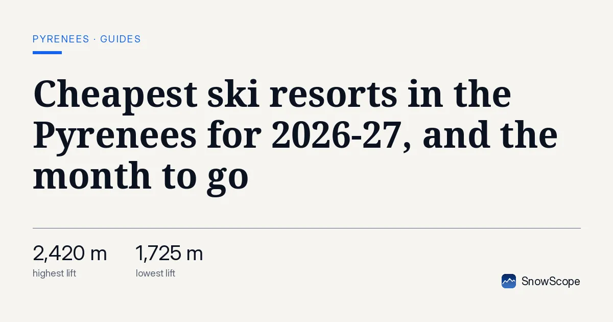

Cheapest ski resorts in the Pyrenees for 2026-27, and the month to go
The Pyrenees are the cheapest big mountains to ski in western Europe: Cauterets sells an adult day pass for 46 EUR and Boí Taüll for 49 EUR. But timing matters more here than in the Alps. In our snow history of 46 past winters, none of the six resorts we compared has a single week with 50 cm of snow in 9 winters out of 10, and December is usually thin.
See the live snow forecast for Cauterets Cirque du Lys in the SnowScope appSnow depth, powder alerts and the 3D map, free.
Six Pyrenees resorts by price
Cauterets is the cheapest at 46 EUR a day on its public rate, and 276 EUR for 6 days. Boí Taüll in Catalonia costs 49 EUR. The joint Astún-Candanchú pass costs 54.5 EUR online and 59.5 EUR at the ticket office, and the Grand Tourmalet, the biggest French area of the range, 55 EUR a day or 294 EUR for 6 days.
Andorra's Grandvalira prices change with the date: 62.5 EUR online and 72 EUR at the ticket office for Monday 14 December 2026. Baqueira Beret is the most expensive of the six, 70 EUR a day with its rechargeable card and 74 EUR with a normal ticket, or 359 EUR for 6 days.
Why December is a gamble here
The Pyrenees are lower than the Alps and closer to the Atlantic and the Mediterranean, so early-winter storms often bring rain at the bottom. At mid-mountain, a usual December holds 34 cm at Cauterets, 28 cm at Astún, 26 cm at the Grand Tourmalet and at Grandvalira, 25 cm at Boí Taüll and 20 cm at Baqueira Beret.
January changes the picture. The same heights usually have 72 cm at Cauterets, 66 cm at Astún, 60 cm at Boí Taüll, 57 cm at the Grand Tourmalet, 54 cm at Grandvalira and 44 cm at Baqueira. Cauterets also has the most weeks with 50 cm in at least half of the winters: 15, ahead of Astún with 14.
Our picks for a cheap Pyrenees trip
Cauterets is the best value on both counts: the lowest price and the deepest usual snow of the six. Its Cirque du Lys area is small, 25 km of mapped runs, but it sits in a bowl that keeps the snow. Astún-Candanchú is the Spanish answer, two areas on one pass above Canfranc, with lifts from 1659 m.
Boí Taüll has the highest lifts of the list, from 2039 m to 2747 m, which helps on mild days. For a big area, Grandvalira gives you 136 km of mapped runs; book online and pick weekdays outside holidays to pay the lower price.
When to book
For a cheap week with snow, aim for mid-January to early March, outside the French and Spanish school holidays. The second half of January is usually the best mix: deep enough snow, quiet slopes and normal prices. If you only have December, wait for a real snowfall before you book, and keep the trip short.
Most of these prices are for the whole winter 2026-27, but Grandvalira and other dynamic prices go up as the date gets closer. Buying early online is the simplest way to save.
Sleeping cheap in the Pyrenees
Valley towns are the budget trick: Cauterets village itself, Canfranc for Astún-Candanchú, the villages of the Vall de Boí, or Soldeu and the Andorran valleys for Grandvalira. The map in this article shows stays under 110 EUR a night for the week of 16 to 23 January 2027 near our four picks.
Always check the avalanche bulletin before skiing off the marked runs, and remember that mountain roads in the Pyrenees can need chains after a storm.
Tips for skiers
- Cheapest and snowiest: Cauterets, 46 EUR a day and 72 cm in a usual January at mid-mountain.
- Best month: the second half of January, outside school holidays.
- December in the Pyrenees: book only after a real snowfall.
- Grandvalira and other dynamic prices: buy online, early, on weekdays.
More maps (external sites)
References and credits
- N'PY, Cauterets official ski pass prices 2026-27 www.n-py.com/fr/cauterets/forfaits-ski
- Boí Taüll, official lift pass prices (tarifes) pirineu365.cat/boitaull/estacio/tarifes/
- Astún, official lift pass prices (tarifas 26-27) astun.com/forfaits/
- N'PY, Grand Tourmalet official ski pass prices 2026-27 www.n-py.com/fr/grand-tourmalet/forfaits-ski
- Grandvalira, official ski pass booking (online price for 14 December 2026, read 2026-11-13) www.grandvalira.com/en/ski-pass/day
- Baqueira Beret, official prices (tarifas), season 26-27 www.baqueira.es/es/tarifas
About these numbers
Snow numbers: SnowScope snow history, 46 past winters (1980-81 to 2025-26) at three heights of the resort (an estimate for an area, not resort reports). Lift, run and access facts: the sources listed below, checked on the date shown.
Cite this report
For research, teaching or the press: the numbers and charts are free to reuse under CC BY 4.0 with this citation.
SnowScope (2026), Cheapest ski resorts in the Pyrenees for 2026-27, and the month to go, https://snowscope.app/blog/en/2026/11/cheapest-ski-resorts-pyrenees-2026-27-prices-snow.html, accessed 2026-11-19
SnowScope (Atlas Labs). (2026, November 19). Cheapest ski resorts in the Pyrenees for 2026-27, and the month to go. SnowScope snow reports. https://snowscope.app/blog/en/2026/11/cheapest-ski-resorts-pyrenees-2026-27-prices-snow.html
BibTeX
@misc{snowscope2026cheapestskiresortspyrene,
author = {{SnowScope (Atlas Labs)}},
title = {Cheapest ski resorts in the Pyrenees for 2026-27, and the month to go},
year = {2026},
month = nov,
howpublished = {\url{https://snowscope.app/blog/en/2026/11/cheapest-ski-resorts-pyrenees-2026-27-prices-snow.html}},
note = {Published 2026-11-19 14:57 UTC; accessed 2026-11-19}
}· CC BY 4.0 · Methods, data and tools →
Cauterets Cirque du Lys: snow and temperature by height, this winter vs last (tools) →
Follow Cauterets Cirque du Lys
Free: a message when fresh snow is coming, and the forecast every morning.
More snow reports

Freezing level reaches 3400m–3600m over the next three days, bringing rain to the snowpack from 09–11 November. Forecast from 08 November.

Mixed rain and snow across the Pyrenees on 14 November: Cauterets Cirque du Lys tops the region with 13–20 cm in 72 hours, but rain falls below 2,340 m.

The 0 °C level across the Pyrenees ranges from 2,230 m to 2,820 m over the next days. Snow stays safe from rain as the snow line sits low at each resort.